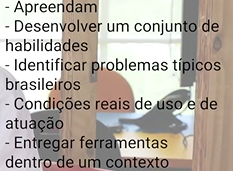

Concepção de Artefatos Digitais¶
Material do curso: Redu
Esta disciplina trata do raciocínio de design como forma sistemática de resolver problemas e criar artefatos (produtos, serviços, interfaces) centrados nas pessoas que vão usá-los. O fio condutor é: entender profundamente um contexto, gerar e selecionar ideias, transformar essas ideias em protótipos e avaliá-los continuamente até chegar a uma solução validada.
Introdução ao Raciocínio de Design¶
Aprender o raciocínio de design está diretamente ligado à ideia de intervenção positiva: não basta observar um problema, é preciso agir sobre o contexto para transformá-lo.
Os objetivos centrais de ensinar o raciocínio de design são:
- Aprendam;
- Desenvolver um conjunto de habilidades;
- Identificar problemas típicos brasileiros;
- Condições reais de uso e de atuação;
- Entregar ferramentas dentro de um contexto.
Foto do slide

O design pode ser entendido como uma forma de pensar natural do ser humano para resolver problemas, que foi sendo explicitada e progressivamente enriquecida com técnicas ao longo do tempo. Historicamente, a formulação do método "Design" surge de um raciocínio de equilíbrio entre:
- a produção em massa voltada para o consumo, e
- a manutenção da qualidade dos materiais e dos processos,
de forma que houvesse cuidado, zelo, estética, uma forma de produção consciente e uma relação próxima com o consumidor — e não apenas escala de produção.
Raciocínio de design
É a forma sistemática, explícita e ensinável de se preparar e aplicar técnicas para resolver problemas. Ao contrário de uma intuição isolada, é um processo que pode ser estruturado em etapas e repetido.
A metodologia básica do raciocínio de design segue cinco etapas:
- Análise de contexto — desmontar o contexto, observar o problema em profundidade.
- Síntese — sistematizar os elementos encontrados na análise.
- Geração de ideias (ideação) — gerar possíveis soluções para o problema.
- Prototipagem — selecionar as melhores ideias e transformá-las em protótipos.
- Avaliação — ajustar a solução com base em feedback.
Essas etapas não são estritamente lineares: na prática, há muita iteração entre elas.
Detalhando o Raciocínio de Design¶
Para entender o que há de específico no raciocínio de design, é útil compará-lo ao raciocínio científico, que é mais antigo e mais formalizado.
Raciocínio científico¶
O raciocínio científico parte da formulação de uma pergunta-problema, construída a partir da leitura do conhecimento prévio existente sobre o tema. A partir dela, segue-se para a experimentação, em uma cadeia linear de etapas:
Método → Observação → Dados → Análise dos dados → Conclusão
Foto do slide — etapas do método científico

Depois de experimentar, é preciso passar por validação, falseamento e a noção de verdade — ou seja, utilizar métodos que permitam confirmar (ou refutar) o resultado obtido, garantindo que a conclusão seja sustentada por evidência e não apenas por intuição. Esse ciclo pode ser detalhado como:
- Organizar o pensamento → Resolver problemas, que retroalimenta o acúmulo de conhecimento;
- Acumular conhecimento → Entender o contexto, que por sua vez se retroalimenta até gerar uma quantidade de variáveis a considerar;
- Essas variáveis, somadas a outras informações (ideias), levam à evolução do protótipo;
- O protótipo evolui até ser representado materialmente, seja como sistema computacional, serviço ou metodologia.
Foto do slide — do raciocínio científico à materialização

Linha do tempo
O detalhamento do raciocínio científico ocorreu há mais de 1000 anos, enquanto o detalhamento do raciocínio de design é muito mais recente — ocorreu há pouco mais de um século. Isso explica por que o design, como disciplina formal, ainda está em consolidação em comparação ao método científico.
Raciocínio de design¶
O raciocínio de design, ao entrar em contexto, lida com uma quantidade muito maior de variáveis do que o raciocínio científico — o que exige um fluxo próprio:
Raciocínio de design → Entrar no contexto → (gerando) uma maior quantidade de variáveis → Explicitar o problema → Variáveis não observáveis → Conjunto de técnicas → Explicitar as variáveis → Representar a solução → Provocar: emoções, aceitações, rejeições
Foto do slide — fluxo do raciocínio de design

O raciocínio de design busca projetar uma solução que ainda não existe. Isso tem uma consequência epistemológica importante: ao pesquisar algo, o designer está, ao mesmo tempo, intervindo nesse algo — inserindo protótipos e ideias dentro do próprio contexto de pesquisa, de modo que a intervenção acaba alterando o próprio contexto que está sendo estudado.
Isso dá origem aos chamados paradigmas projetivos: paradigmas que alteram a realidade na medida em que estudam a alteração que estão fazendo. Na prática, são métodos que permitem inferir informações sobre uma pessoa a partir de suas reações a estímulos ambíguos — ou seja, analisamos a informação à medida que realizamos intervenções para resolver o problema. Esse caráter projetivo forma um ciclo: o problema existe no presente → organizo minha reflexão/raciocínio → calculo o futuro observando o presente → chego a uma solução situada no futuro → que volta a ser confrontada com o problema no presente.
Foto do slide — ciclo projetivo (presente → futuro)

Apesar dessa diferença fundamental de postura, o raciocínio de design pode (e costuma) utilizar o raciocínio científico em diversas etapas do processo — por exemplo, ao validar hipóteses sobre o comportamento de usuários. O raciocínio científico (métodos e técnicas das ciências humanas) fica "dentro" do raciocínio de design, cumprindo o papel de descrever o comportamento das pessoas: conhecer o presente e analisar o contexto → identificar as variáveis → geração de ideias/prototipagem → verificação da solução em sua efetividade → solução proposta.
Foto do slide — o raciocínio científico dentro do raciocínio de design

Design Science Research¶
Design Science Research (DSR) é a epistemologia do design: um paradigma de pesquisa com foco no desenvolvimento e na validação de conhecimento prescritivo em ciência da informação — ou seja, não apenas descrever "como as coisas são", mas prescrever "como resolver" um problema de forma generalizável.
O DSR é, fundamentalmente, um processo de diálogo com pessoas: o pesquisador/designer imagina soluções para o problema junto com as pessoas afetadas por ele. Há uma grande conexão com o público-alvo, com a participação ativa de quem vivencia o problema para ajudar o designer a propor a solução — em vez de o designer decidir isoladamente o que é melhor para o usuário.
O conhecimento no DSR se constrói em camadas:
- 1ª camada — conhecimento da própria equipe de design;
- 2ª camada — conhecimento que emerge depois da participação dos envolvidos (stakeholders, usuários);
- 3ª camada — conhecimento sobre quais são as melhores soluções, já com o apoio direto do público-alvo.
Tip
Essas camadas não são percorridas uma única vez: é preciso revisitá-las o tempo todo ao longo do projeto, até convergir para a solução desejada.
Técnicas¶
Análise de contexto¶
A análise de contexto é a etapa em que se busca entender profundamente o problema antes de propor qualquer solução. Isso envolve:
- Considerar o usuário, deduzindo e inferindo informações a partir do seu comportamento observado.
- Entender a necessidade de analisar o comportamento humano — emoções, desejos e motivações que não aparecem de forma explícita.
- Empatizar com o usuário, colocando-se no lugar de quem vive o problema.
- Ter acesso ao campo/local de estudo, por meio de observação, interpretação e encenação. Conquistar esse acesso, escolher uma técnica adequada, conseguir analisar os dados coletados e sintetizá-los são passos que se encadeiam.
- Delimitar o problema que será resolvido, isolando um aspecto específico do contexto — é impossível (e pouco produtivo) tentar resolver tudo de uma vez.
Fontes e dados¶
Para sustentar a análise de contexto, é importante diferenciar dois eixos: fontes de informação e dados coletados.
Fontes:
- Fontes primárias: artigos da literatura, artigos acadêmicos, livros, materiais didáticos etc. Complementam a quantidade de conhecimento disponível sobre determinado espaço do problema.
- Fontes secundárias: interpretações, análises ou sínteses baseadas em fontes primárias.
Dados:
| Dados primários | Dados secundários | |
|---|---|---|
| Origem | Coletados diretamente pelo pesquisador/organização para responder a um problema específico | Já existentes, coletados por outras pessoas ou organizações |
| Controle sobre a coleta | Total — o pesquisador define o método | Nenhum — usa-se o que já foi coletado |
| Precisão/adequação | Mais precisos e específicos ao objetivo do estudo | Nem sempre correspondem perfeitamente ao objetivo |
| Custo e tempo | Geralmente caros e demorados (entrevistas, enquetes, formulários) | Menor custo e maior facilidade de acesso |
Síntese¶
Depois de coletar os dados da análise de contexto, a síntese busca encontrar padrões de comportamento nesses dados. As ferramentas típicas são tabelas, fluxogramas, diagramas, mapas mentais, jornadas do usuário, entre outras representações visuais que ajudam a organizar o que foi observado.
Geração de ideias¶
O fluxo típico da geração de ideias é: técnicas de geração de ideias → dinâmicas de grupo, alimentadas pelos dados coletados (comportamento do usuário, tendências, estrutura da prática, dados de mercado, análise dos competidores — pontos fortes e fracos), até chegar a ideias que ultrapassam o limite do conhecimento atual.
Foto do slide — fluxo da geração de ideias

A geração de ideias parte do conceito de insight: associar um estímulo com outra informação, gerando um terceiro elemento ainda não conhecido. A técnica mais conhecida para isso é o brainstorming.
Tip
É extremamente importante anotar todas as ideias geradas nessa etapa, mesmo as que parecem pouco promissoras à primeira vista — elas podem se combinar depois ou servir de ponto de partida para outras ideias melhores.
Seleção de ideias¶
O objetivo da seleção de ideias é identificar: as ideias que se diferenciam, as que atendem à necessidade do usuário, e as que valem a pena ser transformadas apenas em protótipos.
Foto do slide — objetivo da seleção de ideias

Depois de gerar um conjunto amplo de ideias, é preciso selecionar quais vão adiante, tipicamente avaliando critérios como desejabilidade, usabilidade e viabilidade.
Técnicas de prototipagem¶
- Cenários — narrativas que descrevem como um usuário interagiria com a solução em um contexto específico.
- Paper prototype — protótipos feitos em papel, de baixíssimo custo, para testar fluxos de interação rapidamente.
Outras ferramentas de apoio¶
- Mapa de empatia — ferramenta visual para organizar o que o usuário pensa, sente, vê, fala e faz, ajudando a construir empatia estruturada com o público-alvo.
- Value Proposition Canvas — ferramenta para alinhar a proposta de valor de uma solução com as dores e ganhos esperados pelo usuário.
Ideação¶
A fase de ideação utiliza as técnicas de geração de ideias apresentadas acima, seguindo o fluxo: criar o ambiente adequado para ousar → criar soluções não esperadas → avaliar quais atendem os requisitos do usuário → encontrar os diferenciais das soluções existentes.
Foto do slide — fluxo da fase de ideação

Depois da geração de ideias, aplicam-se as técnicas de seleção de ideias, considerando critérios como desejabilidade e usabilidade, para entender quais são as melhores ideias a serem desenvolvidas. O fluxo de seleção segue: apresentação das ideias → critérios de seleção → votação → decisão coletiva.
Foto do slide — fluxo da seleção coletiva de ideias

Após a avaliação das ideias, é preciso começar a pensar visualmente essas ideias, utilizando sketching e raciocínio visual para dar-lhes uma primeira forma concreta. Essa "temporalidade do raciocínio de design" aplicada ao sketching relaciona três momentos: passado (construir com base nas observações), presente (realizar a construção agora) e futuro (representação da solução).
Foto do slide — temporalidade do sketching (passado/presente/futuro)

Prototipação¶
Protótipo
A palavra vem de proto-típo — "quase um tipo". Ou seja, uma aproximação da solução final, ainda não definitiva.
Os protótipos são classificados em dois grandes grupos:
- Baixa fidelidade / leves: implementados de forma muito econômica e rápida, geralmente em papel ou com ferramentas simples. Priorizam velocidade de iteração sobre acabamento.
- Alta fidelidade / pesados: exigem maior investimento em arte, diagramação e materiais diversos, aproximando-se mais do produto final.
A prototipagem é, em essência, um conjunto de habilidades para criar a condição atual que antecipa o uso futuro — ou seja, materializar as ideias para simular um uso que ainda não aconteceu, saindo do sketching inicial para algo manipulável, em um ciclo: materialização da interface → observação da interface → observação dos dados → interpretação dos dados → novas versões → representar o produto ou a solução final.
Foto do slide — ciclo de materialização do protótipo

Essa fase está intimamente associada à fase de avaliação, já que os protótipos produzidos são avaliados constantemente ao longo do processo, e não apenas no final. Essa avaliação costuma passar por três dimensões, na ordem:
- Factibilidade — um objeto é uma inovação quando ele é factível.
- Desejabilidade — ele é desejado?
- Viabilidade — alguém pagaria por isso?
Foto do slide — as três dimensões da inovação

Depois dessa avaliação, obtém-se o feedback dos protótipos, que permite a evolução deles em diferentes estruturas — refinando, descartando ou combinando ideias até chegar a uma solução validada.
Grupo 7 — projeto da disciplina¶
A aplicação prática dos conceitos acima, feita em grupo ao longo da disciplina, está documentada em: